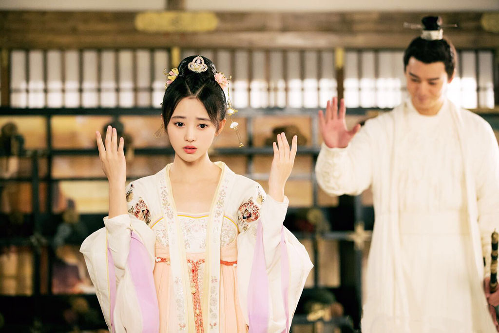
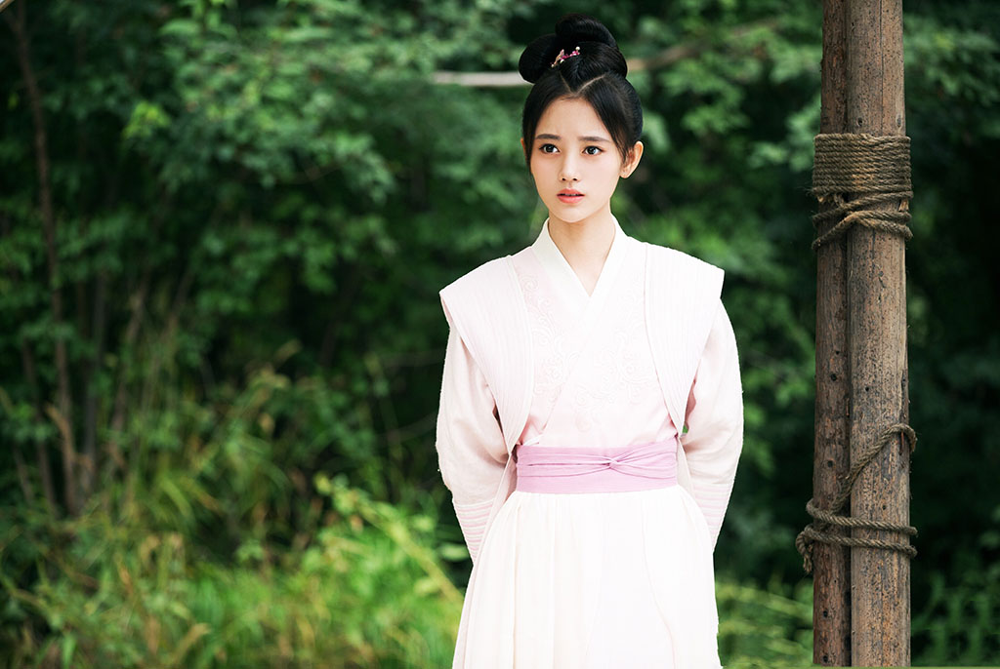
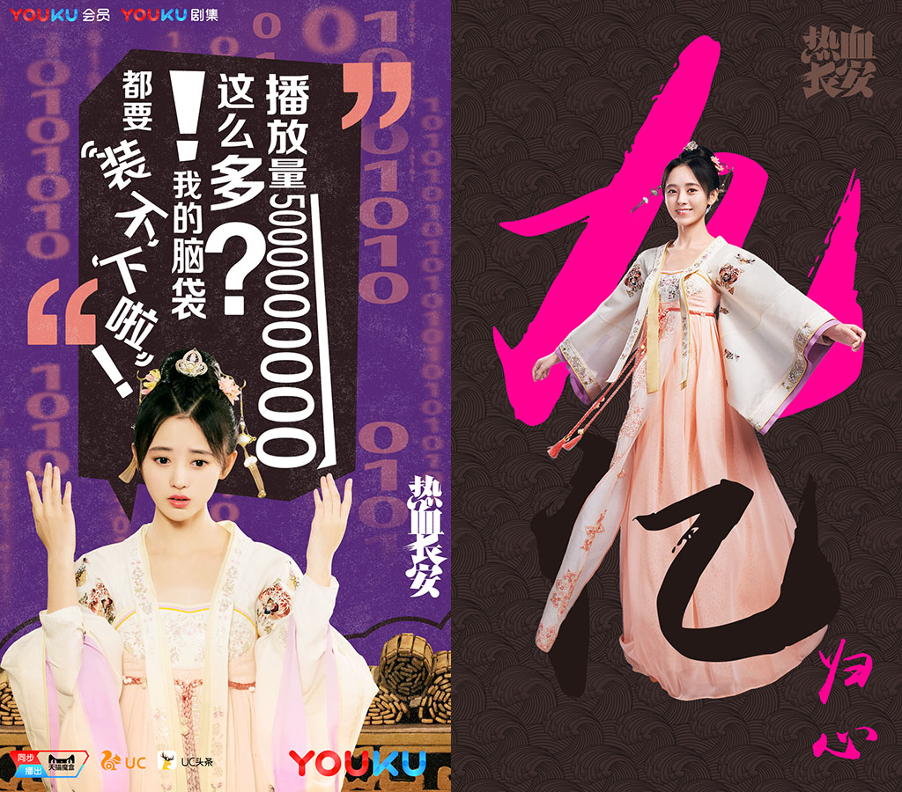
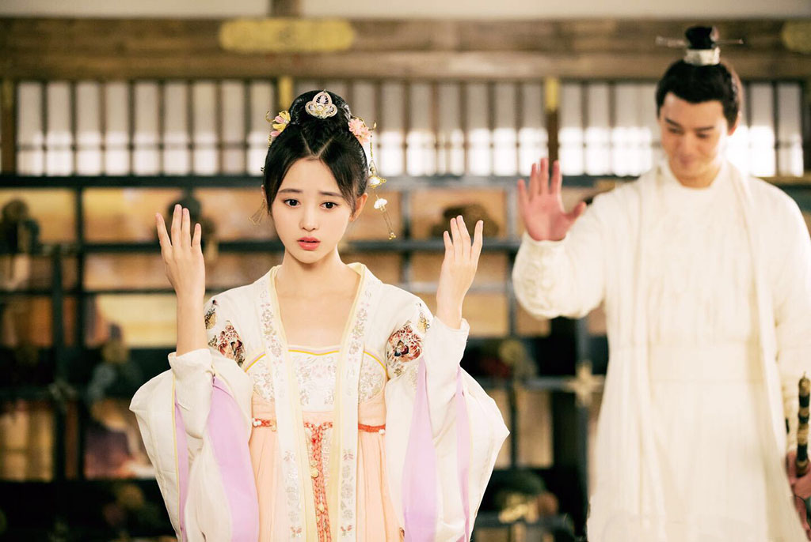
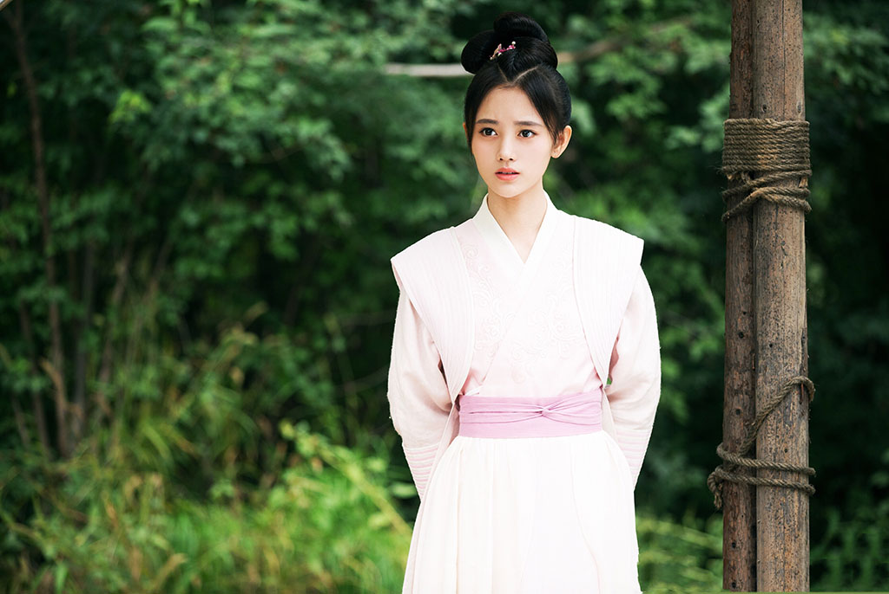
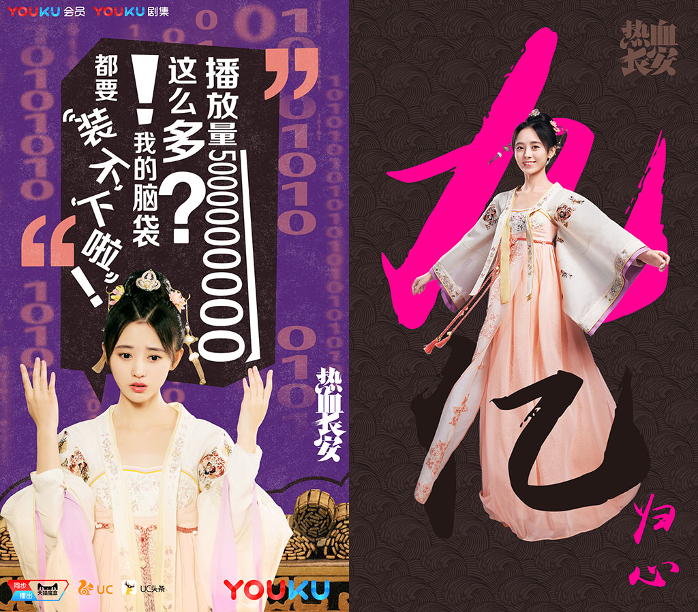

公元626年，大唐都城长安内突然异象丛生，疑案四起，人心惶惶。大理寺成立调查组，调查这些看似怪力乱神的事件，成员囊括通晓伽罗术的萨摩多罗，“人版移动书库”上官紫苏，超强分析能力的大理寺少卿李郅，熟练的制造火药并操作连环火枪的黄三炮，精通各类武器的公孙四娘，医学鬼才仵作谭双叶。
在接二连三的诡谲案件中，调查组还原事实真相，破除坊间迷信。随着调查逐步深入中，众人渐渐发现，黑伽罗妄想用卑劣的手段企图颠覆和谐的大唐。最终邪不胜正，调查组彻底击碎了黑伽罗的邪恶阴谋。少年们除了那份不变的热血豪情，更多了一份坚定的守护家与国的责任之心。
 




